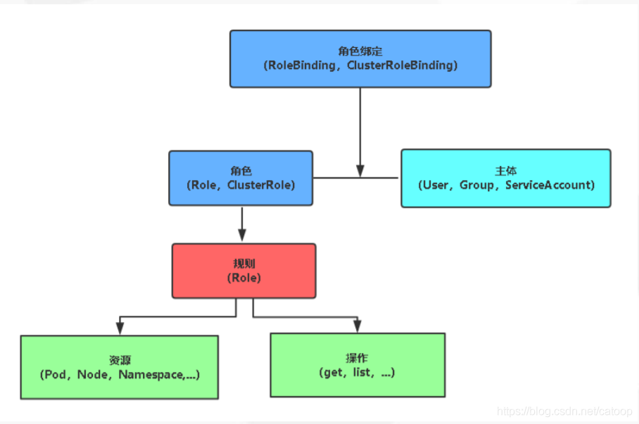

k8s基于角色（Role）的访问控制（RBAC）是一种基于组织中用户的角色来调节控制对计算机或网络资源的访问的方法。
RBAC鉴权机制使用rbac.authorization.k8s.io API组来驱动鉴权决定，允许你通过Kubernetes API动态配置策略。
rbac的概念主要可以参考下图

概念介绍
- Role: 用于定义某个命名空间的角色的权限。
- ClusterRole: 用于定义整个集群的角色的权限。
- RoleBinding: 将角色中定义的权限赋予一个或者一组用户，针对命名空间执行授权。
- ClusterRoleBinding: 将角色中定义的权限赋予一个或者一组用户，针对集群范围内的命名空间执行授权。
k8s上主要是通过上面4个对象来实现对不同的用户来进行权限控制，下面我们来说说如何编写rbac的yaml来实现对子账号进行权限控制。
现在很多云厂商其实已经将k8s的rbac对接了自己cam鉴权系统，客户只需要编写role或者clusterrole来配置权限，然后绑定给云上的子账号，就可以对不同子账号设置对应的权限。
一般云厂商的托管k8s服务，都有提供常用的clusterrole，这里拿腾讯云为例，腾讯云默认就提供4种角色：
- 管理员（tke:admin）：对所有命名空间下资源的读写权限，具备集群节点、存储卷、命名空间、配额的读写权限，可配置子账号的读写权限。
- 运维人员（tke:ops）：对所有命名空间下控制台可见资源的读写权限，具备集群节点、存储卷、命名空间、配额的读写权限。
- 开发人员（tke:dev）：对所有命名空间下控制台可见资源的读写权限。
- 受限人员（tke:ro）：对所有命名空间下控制台可见资源的只读权限。
但是有时候我们对权限控制比较严格，只希望给某些资源的权限给子账号，上面的权限就无法满足了，这个时候就需要我们自己写role或者clusterrole来配置角色了。
如果对rbac不是很了解的话，通过写yaml自定义角色会比较困难，下面我来带你如何通过yaml配置自定义角色权限。
clusterrole字段说明
如果要熟练的编写clusterrole，需要熟悉下面几个字段配置才行，首先我们看一份集群的admin角色yaml，这里的*代表所有，后面再详细讲解字段说明
1 | apiVersion: rbac.authorization.k8s.io/v1beta1 |
apiGroups
为了更容易对API进行扩展，Kubernetes使用API Groups（API组）进行标识。API Groups以REST URL中的路径进行定义，当前支持两类 API groups。
Core Groups（核心组），也可以称之为Legacy Groups，作为 Kubernetes最核心的API，其特点是没有“组”的概念，例如“v1”，在资源对象的定义中表示为“apiVersion:v1”。
具有分组信息的API，以/apis/$GROUP_NAME/$VERSION URL路径进行标识，在资源对象的定义中表示为“apiVersion: $GROUP_NAME/$VERSION”，例如：“apiVersion: batch/v1”，“apiVersion: extensions:v1beta1”，“apiVersion: apps/v1beta1”等
那么怎么查看资源是属于那个apiGroups呢，哪些资源是核心组的呢？
这里我们可以在集群内通过下面命令获取
1 | [root@VM-0-13-centos ~]# kubectl api-resources |
执行获取的结果中，如果资源对应的APIGROUP字段是空，则说明这个资源是属于core api，如果APIGROUP不是空，则说明资源属于对应的这个组，例如场景的控制器DaemonSet、Deployment、StatefulSet都是属于apps这个APIGROUP。
所以你在写yaml的时候，如果resource配置了这些控制器，就要在APIGROUP配置上apps这个。如果你配置了具有分组信息的API资源，但是没有配置上对应的APIGROUP，那么这个资源权限就不会生效。
1 | apiVersion: rbac.authorization.k8s.io/v1beta1 |
将上面的ClusterRole绑定给子账号，子账号还是没有deployment的权限，因为这里没有指定apiGroups，这里就会把deployment当成核心api，这样是无法在apiserver校验通过。因此这里要想让子账号有deployment权限，在apiGroups加上apps即可。
但是有的同学就会问，如果我不知道资源的apiGroups是什么怎么办呢？这里可以配置成*，这里会自动匹配到资源所属的apiGroups
1 | apiVersion: rbac.authorization.k8s.io/v1beta1 |
因此上面这样配置子账号也是有deployment的权限的。如果需要配置多个资源的权限，将同一个apiGroups的配置成一条规则，就像下面一样
1 | apiVersion: rbac.authorization.k8s.io/v1beta1 |
上面我们把核心api的都放到一个rule，然后apps这个api组的放到一个rule。
resources
上面我们说了资源对象的apiGroups，那么k8s中到底有哪些资源对象，如果我只希望给子账号部分的资源的权限，怎么获取这些资源对象呢？
其实可以通过下面命令获取集群中所有的资源对象
1 | [root@VM-0-13-centos ~]# kubectl api-resources |
通过上面命令可以获取所有的api资源，name字段代表资源的名称。如果你需要给对应资源权限，只需要在role或者clusterrole里面的resources配置上资源的name即可
1 | apiVersion: rbac.authorization.k8s.io/v1beta1 |
上面实例，我们就给了子用户的基本控制器的权限。
其实k8s中我们还可以指定某一个或者某几个资源权限给子账号，我们可以在resourceNames字段配置具体某个资源的权限
1 | apiVersion: rbac.authorization.k8s.io/v1 |
上面的示例，说明这里只给了admin、edit、view这3个ClusterRole的bind权限。
verbs
verbs字段的含义是指你能对资源做哪些操作，verbs存在以下几个操作:
- delete
- deletecollection
- get
- list
- patch
- create
- update
- watch
这些字段的定义在k8s的源码中也有定义，具体代码如下
1 |
|
源码里面也有具体定义不同类型操作有哪些
1 | // ReadonlyVerbs represents a list of read-only verbs. |
如果你只希望子账号能查看资源，则只需要赋予查看的动作即可
1 | apiVersion: rbac.authorization.k8s.io/v1beta1 |
上面的示例说明只能查看基本控制器的资源，无法更新或者新建。
上面我们编写yaml，每个字段都是通过list的信息编写，其实还有另外一种写法，可以用中括号代表list，具体编写如下
1 | apiVersion: rbac.authorization.k8s.io/v1beta1 |
其实除了编写yaml的方式创建role或者clusterrole，还可以通过命令创建
1 | kubectl create clusterrole NAME --verb=verb --resource=resource.group [--resource-name=resourcename] [--dry-run] |
这里创建一个clusterrole，只给statefulsets的list权限，如果没有具体的statefulsets是哪个，resource-name字段可以忽略，apiGroup可以不要写，这里会自动匹配资源对应的apiGroup。
赋予子账号权限
上面我们已经说了如何编写role或者clusterrole，但是这里只是定义了角色有什么样的权限，实际上还没有给到具体的子账号，如果想让权限在子账号生效，那么还需要依赖于rolebinding和clusterrolebinding，因为这2个会实际将角色绑定到对应子账号上。
在k8s中，账号其实分为2种，Kubernetes管理的服务账号和普通用户
- 服务账号：集群中的ServiceAccount（简称sa）
- 普通用户：云厂商的用户
k8s的每个命名空间默认有一个default的sa，这个sa只有本命名空间的资源访问权限，如果你在工作负载没有指定特定的sa，就会默认绑定default。
这里我们会经常遇到一个问题，就是在a命名空间下创建了一个pod，但是pod内的进程需要访问集群的其他命名空间资源，会提示没权限，这是因为pod使用的默认default这个sa导致的，解决这个问题，可以将default绑定更高权限的clusterrole或者给pod绑定自定义有权限的sa。
普通用户一般就是云厂商的账号了，现在云厂商都将自己的cam鉴权和集群rbac进行了整合，云厂商的账号也就都接入了k8s，一般只需要给云上账号绑定role或者clusterrole，就能对云上账号进行权限限制。
如何给服务账号绑定权限，可以通过kubectl命令来绑定
1 | # 名为 view 的 ClusterRole 中定义的权限授予 "acme" 名字空间中 名为 "myapp" 的服务账户 |
给普通用户绑定用户，一般云厂商都有自己的可视化界面或者教程，可以参考具体的教程，这里我们以腾讯云的tke举例。
通常步骤是获取子账号的name，然后控制台或者yaml创建ClusterRoleBinding
1 | apiVersion: rbac.authorization.k8s.io/v1beta1 |
yaml可以参考上面实例，tke中name的获取可以通过接口DescribeClusterCommonNames，具体参考文档https://cloud.tencent.com/document/api/457/55721
命令绑定的方式如下
1 | kubectl create clusterrolebinding 1000xxxxxx-ClusterRole --clusterrole=test2 --user=1000xxxxx-1612101921 |
这里需要注意的是rolebinding和clusterrolebinding都是不支持修改的，如果你想重新给用户绑定权限，需要删除之前旧的rolebinding或clusterrolebinding，然后再新建一个，想腾讯云上控制台支持更新权限操作，后端的逻辑也是先删除旧的，再新建新的。

欢迎访问 Vashon 的博客，博客和文章在完善中，请大家耐心等待。 若有问题或者有好的建议欢迎留言，笔者看到之后会及时回复。